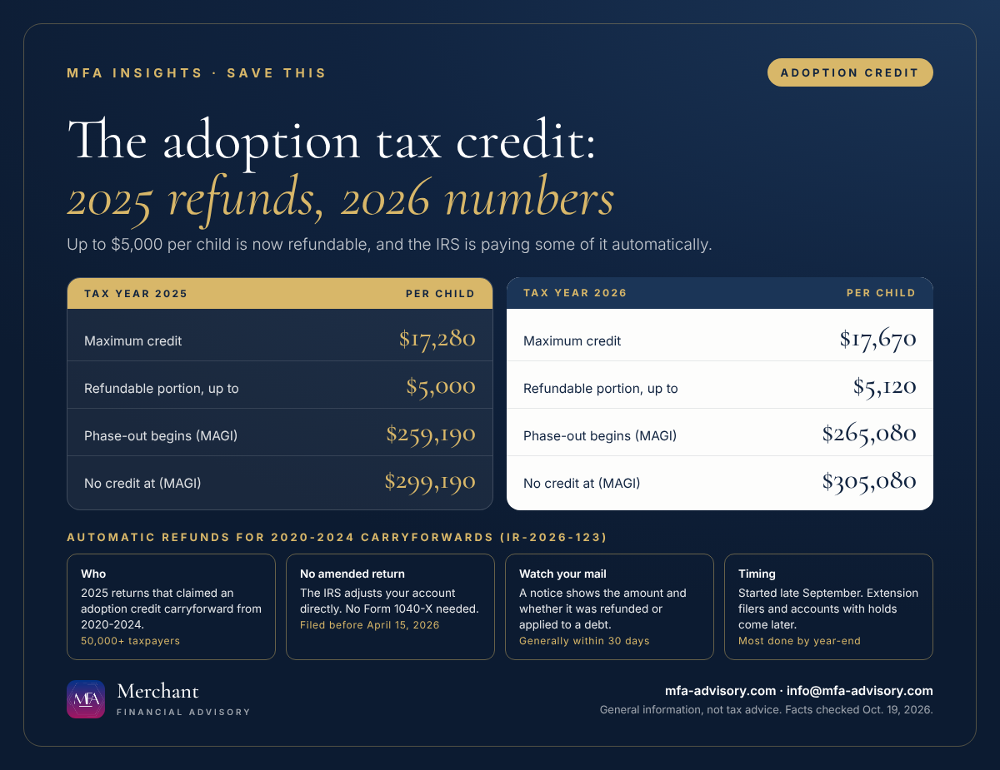

Executive summary
- Automatic refunds are going out. On Oct. 16, 2026 (IR-2026-123), the IRS said it has started refunding more than 50,000 taxpayers who claimed an adoption credit carryforward on their 2025 return.
- No amended return needed. For 2025 only, carryforwards from 2020 through 2024 can count toward the refundable part of the credit, up to $5,000 per child. The IRS is adjusting accounts directly.
- Watch for a notice. It generally arrives within 30 days of the adjustment and shows the amount and whether it was refunded or applied to a debt. Most refunds should be done by year-end.
- 2026 adoptions: the credit is up to $17,670 per child, with up to $5,120 refundable, phasing out between $265,080 and $305,080 of modified AGI.
Bottom line: If you carried an adoption credit into your 2025 return, check your mail and your IRS online account, compare the notice with your return, and keep it with your tax records.
The adoption tax credit refund 2026 is one of the rare pieces of IRS news where most people don't have to do anything. For this adoption credit automatic refund, the IRS is reviewing 2025 returns that used an adoption credit carried forward from earlier years, recalculating the refundable portion, and sending the difference automatically. Here's who is affected, what to expect, and what the credit is worth now.

What changed: adoption tax credit carryforwards can now produce a refund
Starting with tax year 2025, the Working Families Tax Cuts law made part of the adoption credit refundable, meaning it can be paid to you even if you owe no tax. The refundable part is capped at $5,000 per qualifying child for 2025. The rest of the credit stays nonrefundable and can be carried forward for up to five years.
The open question was whether unused credits carried forward from adoptions in earlier years could count toward that refundable $5,000. In IR-2026-123, the IRS said Treasury has clarified that, for tax year 2025 only, adoption credit carryforwards from 2020 through 2024 can increase the amount refundable on the 2025 return, still subject to the $5,000 per-child limit.
Adoption tax credit refund 2026: who gets one automatically
- You filed a 2025 return that claimed an adoption credit carryforward from 2020 through 2024.
- You filed before April 15, 2026. The IRS says these filers should receive any adjustment automatically.
- Your account doesn't have a hold on it. Returns filed under an extension, and accounts with identity theft indicators, freezes, dependency conflicts or other issues, will be reviewed later in 2026, once processing is done or the issue is resolved.
Refunds and adjustments started in late September, and the IRS expects most to be complete by the end of the year.
Do I need to file an amended return?
Generally, no. The IRS says affected taxpayers do not need to file Form 1040-X; it is adjusting accounts directly. Here's what to do instead:
- Watch for the IRS notice. It generally arrives within 30 days of the adjustment and shows the amount and whether it produced a refund or was applied to another tax or non-tax debt.
- Compare it with your 2025 return. Check the child, the carryforward amount and the refund against your Form 8839.
- Keep the notice with your tax records, alongside your adoption documentation.
- Check your IRS Individual Online Account to see the adjustment, refund status and digital copies of notices.
Be wary of anyone who calls, texts or emails claiming you must pay a fee or "verify" details to receive an adoption credit refund. The IRS process is automatic and starts with a mailed notice.
Adoption tax credit 2026 vs. 2025 at a glance
| Tax year 2025 | Tax year 2026 | |
|---|---|---|
| Maximum credit per child | $17,280 | $17,670 |
| Refundable portion (per child) | Up to $5,000 | Up to $5,120 |
| Phase-out begins (modified AGI) | Above $259,190 | Above $265,080 |
| No credit at (modified AGI) | $299,190 or more | $305,080 or more |
| Employer adoption assistance exclusion | Up to $17,280 | Up to $17,670 |
The adoption credit income limit works as a phase-out: the credit shrinks gradually between the two income figures and disappears at the top one. The dollar limit applies per child, not per year. Credits you claimed for the same child in earlier years reduce what's left.
Is the adoption tax credit refundable going forward?
Yes, partly. For 2026 adoptions, up to $5,120 per child is refundable. But the IRS's normal rule is that the nonrefundable amount you carry forward can't be used to calculate a refundable portion in future years. The 2020-2024 carryforward treatment described above is a one-time rule for 2025 returns.
A few practical points for families adopting now:
- Timing depends on the type of adoption. For a domestic adoption, expenses paid before the adoption is final are generally claimed the year after you pay them. For a foreign adoption, you claim them once the adoption is final.
- Special needs adoptions can qualify for the full credit even with no qualified expenses, once the adoption is final and a state or tribal government has made the special needs determination.
- Keep every receipt. Qualifying expenses include adoption fees, attorney fees, court costs and travel (including meals and lodging) while away from home.
- Claim it on Form 8839, and include the child's SSN, ATIN or ITIN. Employer-paid benefits show on your W-2 in Box 12, code T.
FAQs
Taxpayers who claimed an adoption credit carryforward from 2020 through 2024 on their 2025 return. The IRS says more than 50,000 taxpayers are affected and those who filed before April 15, 2026 should be adjusted automatically.
No. The IRS is adjusting accounts directly and will mail a notice, generally within 30 days of the adjustment.
Refunds started in late September and should mostly be done by year-end. Extension filers and accounts with holds, such as identity theft indicators or dependency conflicts, are reviewed later in 2026.
Up to $17,670 per child, with up to $5,120 refundable. It phases out between $265,080 and $305,080 of modified AGI.
Yes. The IRS notice will say whether the adjustment was refunded to you or applied to another tax or non-tax debt.
Merchant Financial Advisory (MFA), an accounting, tax and business solutions provider in Princeton, New Jersey, helps individuals and small and mid-sized businesses in New Jersey, New York and nationwide get credits like this right. See our tax services, our year-end tax planning guide and our 2027 tax calendar, or book a call below.
Save the key dates
- Thu, Dec 31, 2026IRS expects most automatic adoption credit refunds to be finished Refunds for 2025 returns with 2020-2024 adoption credit carryforwards began in late September. Extension filers and accounts with holds are reviewed later.
Add to calendar
- Thu, Apr 15, 20272026 returns due: claim the 2026 adoption credit on Form 8839 Up to $17,670 per child for 2026, with up to $5,120 refundable. The credit phases out between $265,080 and $305,080 of modified AGI.
Add to calendar
Subscribe to every MFA key date
"Add all these dates" downloads one file that opens in Apple Calendar, Outlook or Google Calendar (in Google, use Settings, then Import). Subscribing works with Apple, Google and Outlook and updates itself whenever we publish a new deadline.
Get key tax dates and new articles by email
Every new MFA Insights article, the IRS, New Jersey and New York deadlines that matter, and a calendar you can save. For individuals and small and mid-sized businesses.
Almost done: check your inbox and click the confirmation link to join MFA Insights. (If you don't see it in a minute, check Promotions or Spam.)
Have a question about this?
Ask us privately. Your question goes straight to our inbox, not onto the page, and we reply by email within one to three business days. Please don't include Social Security or account numbers.
Thanks, your question is in. We'll reply by email within one to three business days.
Sources
- IRS IR-2026-123: IRS has begun issuing automatic refunds to individuals who claimed Adoption Tax Credit carryforward from prior years (Oct. 16, 2026)
- IRS: Adoption Credit
- IRS: Notable changes to the Adoption Credit
- IRS FS-2026-03: Questions and answers about refundability of the Adoption Tax Credit
- IRS Rev. Proc. 2025-32: 2026 inflation-adjusted amounts (Section 23 adoption credit)
Facts checked against the sources above as of October 19, 2026. This article is general information, not tax, legal, or financial advice, and reading it does not create a client relationship. Tax rules change and every situation is different; confirm the details for your situation with a qualified professional before acting.